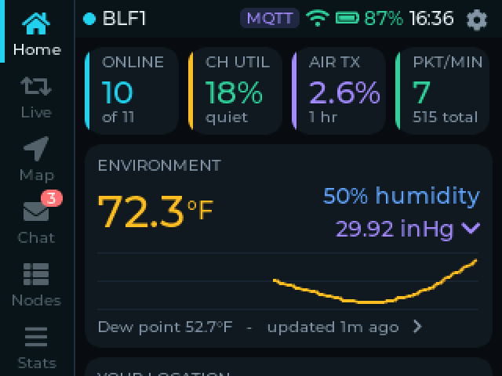
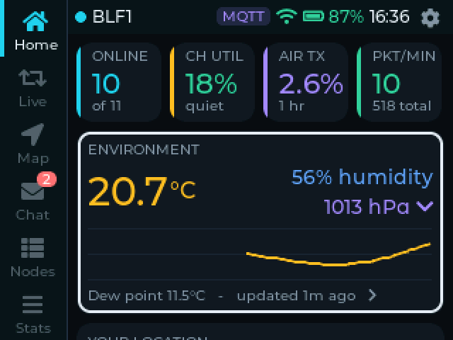
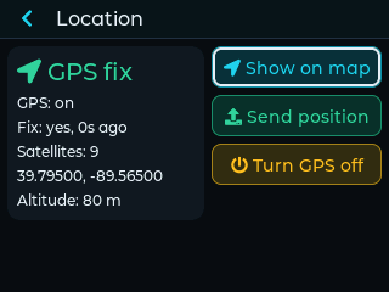
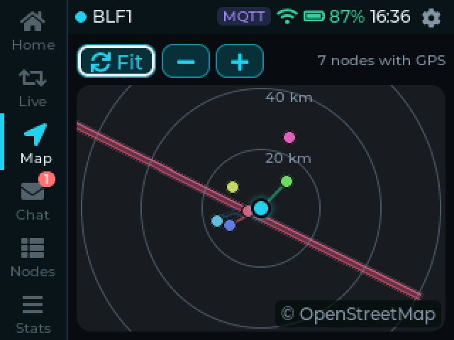

Hoptics MT also runs on two keyboard handhelds: the LilyGO T-Deck Plus (keyboard, trackball, touch screen,
GPS) and the Elecrow ThinkNode M9 (keyboard, GPS, no touch screen). Everything in the Hoptics MT user guide
applies to them; these two pages cover what is different. Both are marked beta: please report anything odd.

Home, sideways: the tabs are in a rail on the left

The highlight (here on Environment) shows where a key press goes
SCREEN
Landscape layout
The 320x240 screens are wider than tall, so the tabs (Home, Live, Map, Chat, Nodes, Stats) sit in a rail
on the left, Home shows its four tiles in one row, and Settings puts labels beside their controls.
INSTALL
Installing
Same as the Heltec kits: open languskhan.github.io/hoptics-mt in Chrome or Edge, pick your
radio, Connect and install.
Coming from MeshCore, WADAMESH or other firmware: tick Erase. Updating Hoptics: leave it off.
T-Deck Plus: if the screen stays dark after installing, slide the power switch off and on.
ThinkNode M9: the first start updates its LoRa chip (about 10 seconds). Keep it plugged in.
The M9 shows up as a USB-SERIAL CH340 port.
Keys and trackball
Everything a finger can do, the keys can do. A ring shows the highlighted control (a tap on the T-Deck's screen hides it).
KEY
WHAT IT DOES
Arrows / roll the trackball
Move the highlight. Main screen: Left / Right switch tabs. On a page on top, Left goes back.
Enter / press the trackball
Press the highlighted control: open a row, flip a switch, open a list, send.
Esc, or Backspace outside a text field
Back: close the page on top, or go to Home (T-Deck: Backspace, or roll the trackball left).
hlmcns
On the main screen: jump to Home, Live, Map, Chat, Nodes, Stats.
Typing in a chat
Goes straight into the message; Enter sends. No on-screen keyboard.
Map
Highlight the map and press Enter to pan with the arrows or trackball; + and - zoom; Enter or Esc stops.
T-Deck trackball: lists, sliders and the message field take two presses: press, roll to change, press
again (in the message field that sends). A press on a dark screen only wakes it.
Hoptics MT · T-Deck Plus and ThinkNode M91
NEW IN 0.3.0 · BETA
The M9's keys, the Location card and GPS

The Location card (location key, short press)

Show on map: the map follows your position
M9
The keys above the keyboard
KEY
WHAT IT DOES
Message bubble
Opens Chat.
House
Home.
Second bubble
A new message on the primary channel.
Big center key
OK (Enter). The ring around it moves the highlight.
Back
Back.
Location
Short press: the Location card. Long press: GPS on or off.
Map
Opens the Map.
LOCATION
The Location card
Shows whether GPS is on, the fix and how long ago, satellites (when the radio reports them), your
coordinates and altitude.
Show on map jumps to the map and follows you. Send position sends your GPS position out now,
on the first channel that shares position. Turn GPS off/on needs a second press to confirm; the radio
restarts to apply it.
Press the location key again, or Back, to close it. On any radio, tapping Your location on Home opens it too.
GPS AND POWER
GPS and battery
Both have GPS built in, on by default. Settings > Radio has a GPS switch (also on the V4-R8 kit).
"Fix" on the Location card is worked out from the radio's position updates (about one a minute), so after
losing the sky it can still say "yes" for a few minutes.
On battery, both use Meshtastic's power saving like their stock firmware: once the screen and Wi-Fi are off
they sleep lightly and wake on a key, a trackball press or a message. On USB or a charger they stay awake.
Something not right? Use Report a problem in Settings (it makes a QR code with
the details), or open an issue at github.com/Languskhan/hoptics-mt/issues. Say which radio you have.